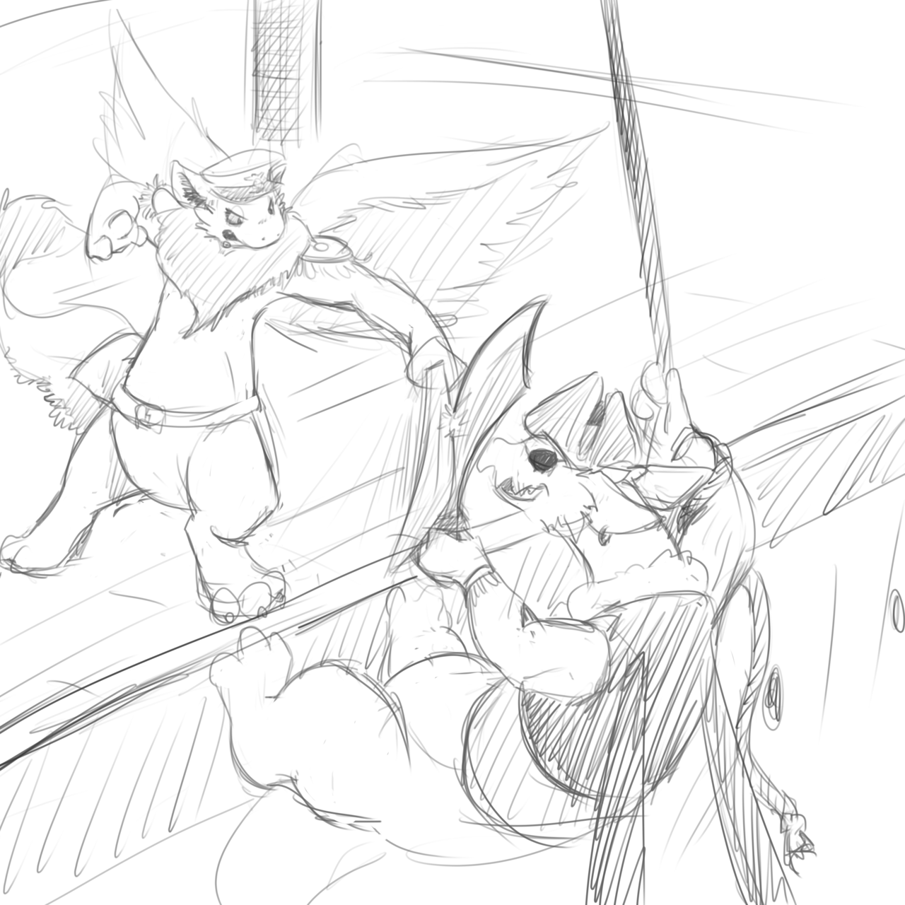

You've been on the hunt after the notorious pirate captain Nipfang for several months now. His recent raids on shipping over the last few years have been a blight upon the eastern trade-routes, but worst of all, his actions threaten to embolden others to follow his cause. Two decades ago the Awe Admiralty fought a fierce successful campaign to end piracy in this region. But with the opening of the western routes, fleet focus has been put elsewhere and pirates like Nipfang have risen once more.
But you are about to 'nip' this particular problem in the bud, you've discovered Nipfangs ship anchored and resupplying for water in the distant 'Raucous isles' and now bear down upon them. Pirate Captain Nipfang has allegedly been defeated and driven off before, but never captured. This is your chance for personal glory and future safety of the region!
“They are raising anchor and hoisting sails Captain!” My loyal First-Officer shouts.
“Head straight for them and brace for impact, we shall stop them here!” I command loudly. He cant escape if we cripple his ship.
With a groan, creak and crash of timbers the two ships clashed together. We had the momentum and almost managed to ram their broadside entirely, that would have most likely brought us a quick victory but it was too late for regrets now. The force of impact sent objects and crew flying and staggering about, a few fools unable to brace themselves properly did involuntary cartwheels across the deck. I would have liked to think it was worse for the other ships, but the Wulfs were crafty and nimble, I could see a good 30 of them clinging to the railings and ropes in their masts, getting flung around good but not dropping.
“WE GOT THEM NOW AWES!” I shouted before even the foam of sea had calmed or the ships stopped reeling.
But even as I shouted in confident triumph, I see them leaping and swarming over to our ship, they had been prepared for us!
Brave Awe crew clashed with Wulf pirates, blades flashing and twanging and some going down in even closer wrestling combat.
I was soon not without an opponent of my own, a notch-eared green-furred Wulf stalked toward me, daggers in both paws, one held by his prehensile tail and one in his mouth.
Wulfs are wicked fighters in paw to claw close-combat, its often a good idea to keep them at a distance, but this one seems to just have more daggers then sense. I could deal with him easily, the trick to beating Wulfs is always discipline and some patiance.
Nearby two very junior sailors have not quite gained courage to join the fight. In the distance i see my First-officer take on two Wulfs herself, the whole ship is one big melee, we need to regain control of this situation quickly!
Kick him offboard
I swing my sword high and at his face to distract his attention and in the next movement land a heavy kick to his chest. Perhaps the Wulf did not expect such crude aggressive tactics from a groomed Awe-captain of the Admiralty, for he went reeling back and over the side of the ship, daggers clattering onto the deck.
I have a moment to survey the ongoing battle; Hooks are keeping the two ships together. Wulfs keep swarming over in some numbers, many of them climbing our railings and sail to take control of the high-ground where they can drop down into our flanks. Crew are rushing to meet foes, among those are the crews few Raptorians, the brutish large heavy laborers of the ship and heavy-troops in a pinch.
Mostly everyone are tied up, furthest in the distance at the other end of the ship I see a knot of Awes being driven back by an organized mob of Wulfs, Nipfang is leading the pirates effectively in attack over there.
But perhaps getting the Wulfs off the sails above are my main concern, I look around for my capable officers to help direct towards this trouble and spot the kicking feet of my First-officer flailing out of the maw of a particularly greedy and bold red Wulf.
I curse, there us little time before the initial advantage of this battle is decided, quick action is required.
The sword isn't for show
My blade flashes in quick strokes towards the Wulf, quickly forcing him back and into trying to parry with his short daggers to avoid a cut. I have better reach and training, with a jab and flick he looses on dagger from a cut paw and then a gash across his other arm has him in retreat. The Wulf scampers back and jumps back to his ship over the gap between them.
I have a moment to survey the ongoing battle; Hooks are keeping the two ships together. Wulfs keep swarming over in some numbers, many of them climbing our railings and sail to take control of the high-ground where they can drop down into our flanks. Crew are rushing to meet foes, among those are the crews few Raptorians, the brutish large heavy laborers of the ship and heavy-troops in a pinch.
Mostly everyone are tied up, furthest in the distance at the other end of the ship I see a knot of Awes being driven back by an organized mob of Wulfs, Nipfang is leading the pirates effectively in attack over there.
But perhaps getting the Wulfs off the sails above are my main concern, I look around for my capable officers to help direct towards this trouble and spot the kicking feet of my First-officer flailing out of the maw of a particularly greedy and bold red Wulf.
I curse, there us little time before the initial advantage of this battle is decided, quick action is required.
What subordinates are for
I gave the advancing Wulf a frown, I have a battle to tend to and no time to play around.
A whistle and wave of paw is all it takes for the two junior sailors to snap to and charge the Wulf for me. They quickly drive him back towards the railing with a flurry of flailing swords, I turn my attention away from it, 2 on 1 they should handle it.
I have a moment to survey the ongoing battle; Hooks are keeping the two ships together. Wulfs keep swarming over in some numbers, many of them climbing our railings and sail to take control of the high-ground where they can drop down into our flanks. Crew are rushing to meet foes, among those are the crews few Raptorians, the brutish large heavy laborers of the ship and heavy-troops in a pinch.
Mostly everyone are tied up, furthest in the distance at the other end of the ship I see a knot of Awes being driven back by an organized mob of Wulfs, Nipfang is leading the pirates effectively in attack over there.
But perhaps getting the Wulfs off the sails above are my main concern, I look around for my capable officers to help direct towards this trouble and spot the kicking feet of my First-officer flailing out of the maw of a particularly greedy and bold red Wulf.
I curse, there us little time before the innitial advantage of this battle is decided, quick action is required.
Order them to attack the Wulf ship
I figure they are to little use running themselves ragged around the ship. With a loud shout of order I command their Pack-master to leap over the closest gap and take the fight to the Wulfs on their ship instead. That should slow the tide of them coming over and help us organize into a proper line.
They hasten to obey, though they're not the most organized bunch, their strongest trait has always been that they do not hesitate once told what to do.
In ones and twos they push their way forward and take the leap to the Wulf ship where they disappear from sight because of the tilting angle of the enemy ship. We did Ram them after all.
Soon I quickly spot several troubled regions in the fighting where our lines are being pushed dangerously back or help is needed. By now, shouting general orders over the din would be quite ineffective so i join the general fighting to add courage to my troops.
The innitial melee is reaching its conclusion, lines have begun to form, its nearly clear who has the advantage. Perhaps my actions has helped give us the edge to win the day.
Order them to meet the boarders
They're to no use running around and being disruptive. With a loud shout I command their Pack-master to have them line up with even spacing where they're coming over at their thickest. Let them be a buffer for the invading Wulfs to try to pass through.
They hasten to obey, though they're not the most organized bunch, their strongest trait has always been that they do not hesitate once told what to do.
A line forms to meet the tide of Wulfs rushing in and out of battle and comming over from the enemy ship. They snap, jump and swing their heavy tails to catch or bat at the pirates as they come.
Soon I quickly spot several troubled regions in the fighting where our lines are being pushed dangerously back or help is needed. By now, shouting general orders over the din would be quite ineffective so i join the general fighting to add courage to my troops.
The innitial melee is reaching its conclusion, lines have begun to form, its nearly clear who has the advantage. Perhaps my actions has helped give us the edge to win the day.
They probably know what they're doing.
It might look quite chaotic, but after pausing a while and watching the fighting, the disruptive charging and chasing the Raptorians are doing are keeping the Wulfs from organizing properly and ensnare our orderly lines of fighting crew.
They might not catch many of the Wulfs, but they keep them constantly on their toes and help our faster Awe fighters get opportunities.
Soon I quickly spot several troubled regions in the fighting where our lines are being pushed dangerously back or help is needed. By now, shouting general orders over the din would be quite ineffective so i join the general fighting to add courage to my troops.
The innitial melee is reaching its conclusion, lines have begun to form, its nearly clear who has the advantage. Perhaps my actions has helped give us the edge to win the day.
Rescue your officer!
I cant just abandon my trusty first-mate to some random Wulf-pirates belly! With a snarl I lunge towards the two of them and give the Wulf a lesson in why you dont stop to eat in the middle of a battle.
The Wulfs eyes widen and she staggers back to avoid my sword, she's in no position to defend herself, not with my officers flailing bringing her off-balance. I soon have her pinned against the deck at the point of my sword and she quickly relinquishes her prize, spitting up my wet and flustered first-mate.
To her credit, she quickly recovers and snarls, grabbing the Wulf by her tail and flings her overboard by it. Only then does she notice me and nods sheepishly, slight embarrassment on her face. “Er... Thanks, Captain.”
With my First-mate at my side, I turn to face the battle once more and with their help cut down the ropes holding the sails and riggings stable. Part of the mainsail collapses and the Wulfs are robbed of their high-ground, but many have entrenched themselves quite well up there now.
The snarls of the Raptorians alert my attention. They are out in force now they stomp around the deck.
"Captain, they are doing a good job with keeping the Wulfs from holding any positions and off-balance." My First-officer comments. She may be correct, but i could also order them to more specific action.
Cut those ropes, bring the sails and rigging crashing down!
I cant let them gain the high-ground! I rush forward and leap from the railing of the stern-castle to the critical ropes holding main-mast rigging up and cut at the crucial ropes. Meanwhile I shout a warning to those below as the structures become undone with snaps and whips of rope. With some help from attentive crew up in the masts, the rigging and part of sail drop down loosely, taking crew along with it. Some Wulfs leap to safety, other tumble into the sea or down onto the deck in hard landings. They may be nimble, but that had to hurt! The action wasent without consequence for some of my own crew however, not all are able to spread their wings and glide down safely, but I still consider it a gain.
I return to help my first-officer, but the Wulf has made off with her and was nowhere to be found. We have gained an advantage in the melee but im now alone in command.
The snarls of the Raptorians alert my attention. They are out in force now they stomp around the deck. But they are leaderless and may need direction to be useful. Right now they are aimlessly chasing elusive and nimble Wulfs around the deck. Though to their credit they are causing quite a disruption.
Join the fray, assist the crew!
I must help shift the balance of the fight before it goes too far out of our favor. Numbers might be key but if I can defeat and capture their leader, the enemy are likely to surrender outright! I dash into the fray to dodge, slash and fight my way to the knot of crew that require help against the pirate captain at the opposite side of the ship.
Its a slow slog, a distance I could have crossed in moments normally progresses slowly as the deck is a general chaos of bodies. Wulfs drop down from above to hinder me with their mobile fighting styles and seem to be all over the place and leaping in and out of the way.
By the time I reach the fore-castle its almost over, Awes stand teetering on the edge of the railing, backs to the cold sea. I try to rally them, but its too late, the Wulfs press their attack to finish it and several drop into the waters and cling helplessly to the ships side with their now soggy coats of fur.
I retreat slowly with the few I managed to break out of the position, Nipfang is too well-guarded and out of reach.
A raptorian thunders past, nearly bowling me over in his aimless pursuit of a nimble Wulf who is scrambling to get away. The Raptorians are out in force and causing havoc for both sides, they are leaderless and may need direction to be useful